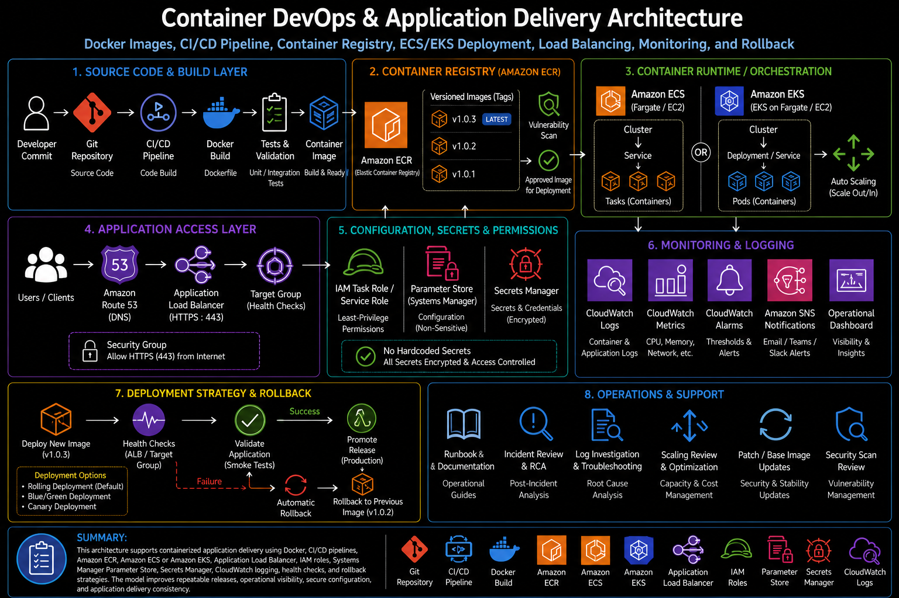

Project Documentation
Container DevOps & Application Delivery
This project documents a container DevOps and application delivery model for packaging, building, storing, deploying, validating, and supporting containerized applications. The work focused on using Docker, Dockerfiles, container image tagging, private container registries such as Amazon ECR, CI/CD pipelines, Azure DevOps or GitHub Actions, build and release stages, environment configuration, secrets handling, container runtime settings, ECS or EKS concepts, load balancing, CloudWatch logs, IAM roles, vulnerability scanning, rollback planning, deployment validation, and operational runbooks.

Overview
This project documents a container DevOps and application delivery model for packaging, building, storing, deploying, validating, and supporting containerized applications. The work focused on using Docker, Dockerfiles, container image tagging, private container registries such as Amazon ECR, CI/CD pipelines, Azure DevOps or GitHub Actions, build and release stages, environment configuration, secrets handling, container runtime settings, ECS or EKS concepts, load balancing, CloudWatch logs, IAM roles, vulnerability scanning, rollback planning, deployment validation, and operational runbooks.
The goal of the project was to improve deployment consistency and reduce environment drift by packaging applications into repeatable container images. Instead of depending on each server or environment having the same packages, libraries, runtime versions, and configuration, the application could be built once, tagged, pushed to a registry, and deployed through a controlled release workflow. This created a stronger foundation for safer application delivery and production support readiness.
Background
Traditional application deployments often depend on server-specific configuration. A working deployment may rely on packages installed manually, runtime versions that differ between environments, local configuration files, or deployment steps that are not fully documented. Over time, this creates environment drift and makes it harder to troubleshoot issues between development, test, staging, and production.
Containers help solve this problem by packaging the application and its runtime dependencies into an image. The same image can then move through the deployment lifecycle with controlled tagging, registry storage, scanning, promotion, validation, and rollback. This makes the delivery process more repeatable and gives operations teams a clearer way to understand what version of an application is running.
This project focused on the operational side of container delivery. Building a container image is only one part of the workflow. The application also needs image tagging standards, registry access controls, deployment stages, secure configuration handling, runtime permissions, logs, monitoring, health checks, vulnerability review, rollback planning, and a runbook for investigating failed deployments.
Business Problem
The business problem was inconsistent application delivery and operational uncertainty across environments. When application releases are performed manually or depend on server-specific configuration, the same code can behave differently depending on where it is deployed. This increases troubleshooting time and makes release outcomes harder to predict.
Another challenge was release traceability. Without a clear image tag, registry record, deployment history, and validation process, it becomes difficult to know which application version is running, which build introduced a problem, whether a release was deployed successfully, and how to return to a previous version if needed.
The platform need was to create a safer and more repeatable delivery workflow. Application code needed to move from source control to image build, image scan, private registry storage, deployment, validation, monitoring, and rollback through a controlled process. This helped improve deployment consistency, reduce environment drift, strengthen image management, and make production support more predictable.
Architecture
The architecture used source control as the starting point for application delivery. Application code, Dockerfiles, build configuration, deployment manifests, and pipeline definitions were stored in a Git-based repository. A CI/CD pipeline handled the build process by checking out the code, building the Docker image, applying a versioned image tag, running validation steps, and pushing the approved image to a private registry such as Amazon ECR.
Amazon ECR provided the private image repository. Images were tagged by version, build number, commit reference, or release identifier so deployments could be traced back to a specific build. Image scanning and registry policies supported stronger image management by helping identify vulnerabilities, control access, and maintain a cleaner image lifecycle.
The runtime layer could use Amazon ECS, AWS Fargate, or Amazon EKS depending on the application pattern. ECS or Fargate provided a managed container service model using task definitions, services, clusters, IAM task roles, CloudWatch logs, and load balancer integration. EKS provided a Kubernetes-based model using pods, deployments, services, ingress or load balancing, namespaces, service accounts, and cluster-level operations. In either model, the container image was pulled from the private registry and deployed into a controlled runtime environment.
The access layer used a load balancer to route traffic to healthy containers. Health checks helped determine whether a container was ready to receive traffic. CloudWatch logs and metrics supported operational visibility into container output, service health, deployment events, scaling behavior, and application issues. Environment variables, Parameter Store, Secrets Manager, and runtime configuration were used to separate application settings from the image itself.
What I Did
I supported the container delivery model by documenting and organizing the workflow from source control to image build, private registry storage, deployment, validation, monitoring, and rollback. The work included Dockerfile structure, image tagging, CI/CD build stages, registry publishing, secrets and configuration handling, runtime permissions, container logs, deployment validation, vulnerability scanning, and operational troubleshooting.
I also focused on making the delivery process supportable after deployment. A containerized application needs clear answers to operational questions: which image is running, where it was built, which tag was deployed, what environment variables were used, where secrets are stored, which IAM role the task or pod uses, how logs are collected, how health checks work, and how to roll back if the release fails.
The work helped connect DevOps delivery practices with cloud operations. The pipeline created repeatability, while the runtime configuration, monitoring, and runbook process made the application easier to support in a production environment.
Implementation Details
1. Dockerfile and image build process
The Dockerfile defined how the application image was built. It included the base image, runtime dependencies, application files, exposed ports, working directory, startup command, and any build-time configuration required for the application. A clear Dockerfile helped make the application package repeatable and reduced dependency drift between environments.
2. Image tagging and version control
Image tagging was a key part of release traceability. Instead of relying only on a generic latest tag, the delivery process used versioned tags tied to a build, release, commit, or pipeline run. This made it easier to identify what was deployed and supported safer rollback because a previous known-good image could be selected when needed.
3. Private container registry
A private container registry such as Amazon ECR stored approved application images. The registry acted as the controlled handoff point between the build pipeline and the runtime environment. Registry access was protected through IAM permissions, and images could be scanned, tagged, retained, or cleaned up according to the operational lifecycle.
4. CI/CD build and release stages
The CI/CD pipeline provided the delivery workflow. A typical process included source checkout, dependency installation where needed, Docker build, test or validation checks, image tagging, registry login, image push, deployment update, and post-deployment validation. Separating build and release stages helped make the delivery process easier to review and safer to operate.
5. Environment configuration
Runtime configuration was separated from the container image. Environment variables were used for non-sensitive application settings such as runtime mode, service endpoints, feature flags, or table names. Sensitive values were handled through approved secret stores such as Systems Manager Parameter Store or Secrets Manager. This reduced the risk of hardcoded secrets and allowed the same image to be deployed across environments with different configuration.
6. Secrets handling
Secrets handling required a controlled approach. Database passwords, API tokens, SMTP credentials, and other sensitive values were not stored inside the Docker image or committed to source control. Instead, they were retrieved at runtime through IAM-controlled access to Parameter Store, Secrets Manager, or an approved platform-specific secret mechanism. This improved security and made credential rotation easier to support.
7. ECS and Fargate runtime concepts
In an ECS or Fargate pattern, the application image was deployed using task definitions, services, clusters, and task roles. Task definitions described the image, CPU and memory settings, environment variables, log configuration, port mappings, health checks, and task role permissions. ECS services kept the desired number of tasks running and integrated with load balancers for application traffic.
8. EKS runtime concepts
In an EKS pattern, the application image was deployed through Kubernetes objects such as deployments, pods, services, ingress resources, config maps, secrets, and service accounts. EKS added Kubernetes flexibility but also required operational awareness around cluster access, namespaces, pod health, image pull behavior, IAM integration, scaling, logging, and deployment rollout status.
9. Load balancing and health checks
Load balancing routed user traffic to healthy containers. Health checks were used to determine whether a container was ready and healthy enough to receive traffic. This was important for rolling deployments because the release should not send production traffic to a container that starts successfully but fails application-level checks.
10. IAM roles and runtime permissions
Runtime permissions were handled through IAM roles. ECS task roles, EKS service account roles, or platform-specific runtime identities granted containers access to only the AWS resources they needed. This reduced the need for static credentials and supported a least-privilege model for application access to services such as S3, DynamoDB, SQS, Parameter Store, Secrets Manager, or CloudWatch.
11. CloudWatch logs and monitoring
CloudWatch logs captured container output and application logs. Metrics and alarms supported visibility into service health, task failures, container restarts, CPU and memory usage, deployment events, load balancer target health, and application errors. Logging and monitoring were required so the team could troubleshoot issues after deployment instead of treating the container runtime as a black box.
12. Vulnerability scanning
Image scanning supported stronger image management by identifying vulnerable packages, outdated base images, or known security issues. Scan results helped determine whether an image could move forward, required remediation, or needed base image updates. This improved the release workflow by bringing security review into the container image lifecycle.
13. Rollback planning
Rollback planning was built into the delivery process. Because images were versioned, a previous known-good image could be redeployed if a new release failed validation or caused production issues. Rollback planning included knowing which image tag to restore, how to update the service or deployment, how to confirm health checks, and how to review logs after the rollback.
14. Operational runbooks
Runbooks documented the steps for building, deploying, validating, troubleshooting, and rolling back containerized applications. A strong runbook helped support teams investigate failed deployments, image pull errors, IAM permission issues, unhealthy tasks or pods, missing environment variables, secret retrieval failures, load balancer health check failures, and application errors.
Validation
Validation began during the build process. The pipeline needed to confirm that the Docker image built successfully, the correct image tag was applied, the image was pushed to the private registry, and any required test or validation steps completed before deployment. This helped catch build issues before they reached the runtime environment.
Deployment validation focused on confirming that the runtime service pulled the correct image and started healthy containers. In ECS, this meant reviewing task definition revisions, service deployment status, task health, load balancer target health, and CloudWatch logs. In EKS, this meant reviewing deployment rollout status, pod status, service routing, ingress behavior, events, and container logs.
Configuration validation confirmed that the application received the expected environment variables and could access required secrets through the approved mechanism. This step was important because many container failures are caused by missing configuration, incorrect runtime values, failed secret retrieval, or IAM permissions that are too restrictive or incorrectly scoped.
Security validation included reviewing image scan results, IAM role permissions, registry access, secret handling, network exposure, and load balancer configuration. Operational validation included checking logs, metrics, alarms, health checks, deployment events, and rollback readiness. A deployment was not considered complete until the application was reachable, healthy, observable, and supportable.
Operational Workflow
The operational workflow began with a code change in source control. A developer or engineer committed application code, Dockerfile updates, configuration changes, or deployment updates to the repository. The CI/CD pipeline then started the build process, created the container image, applied the correct tag, ran validation checks, and pushed the image to the private registry.
After the image was available in the registry, the release stage updated the target runtime environment. In an ECS pattern, this could involve registering a new task definition revision and updating the service. In an EKS pattern, this could involve updating a deployment image tag and allowing Kubernetes to roll out the new pods. In both cases, the runtime platform pulled the image from the registry and started the new application version.
During deployment, the platform monitored rollout status, container startup, health checks, load balancer target health, logs, and application behavior. If validation succeeded, the release was considered promoted. If validation failed, the workflow moved into investigation or rollback. Because previous image tags were preserved, the team could restore a known-good version and validate the service again.
For troubleshooting, the workflow followed the container delivery path step by step. The team reviewed pipeline logs, image build output, registry push status, image tags, scan results, task or pod startup events, IAM permission errors, environment variables, secret retrieval, load balancer health checks, CloudWatch logs, runtime metrics, and application responses. This structured process helped isolate whether an issue came from the build, registry, deployment configuration, runtime platform, permissions, networking, secrets, or application code.
Outcome
The project improved deployment consistency by using container images as the application delivery unit. Packaging the application and runtime dependencies into a Docker image helped reduce environment drift and made deployments more predictable across different stages of the release lifecycle.
The work also strengthened image management and release traceability. Versioned tags, private registry storage, vulnerability scanning, CI/CD deployment stages, and rollback planning created a clearer release workflow. Teams could better understand which image was running, where it came from, whether it passed validation, and how to restore a previous version if needed.
The biggest operational value was production support readiness. By combining CI/CD pipelines, Amazon ECR, ECS or EKS concepts, load balancing, IAM roles, secrets handling, CloudWatch logs, monitoring, health checks, validation, and runbooks, the project created a practical container delivery model that was easier to deploy, troubleshoot, secure, and operate.
What This Demonstrates
This project demonstrates practical container DevOps and cloud application delivery experience across Docker, Dockerfiles, image tagging, Amazon ECR, private registries, CI/CD pipelines, Azure DevOps or GitHub Actions, build and release stages, environment variables, secrets handling, ECS or EKS concepts, load balancing, CloudWatch logs, IAM roles, vulnerability scanning, rollback planning, deployment validation, and operational runbooks.
It also demonstrates platform engineering judgment. Container delivery is not only about building an image. It requires understanding how source control, image lifecycle, registry access, runtime configuration, permissions, networking, health checks, logging, scanning, deployment strategy, rollback, and support workflows fit together. This project shows how those components can be organized into a safer and more repeatable application delivery model.